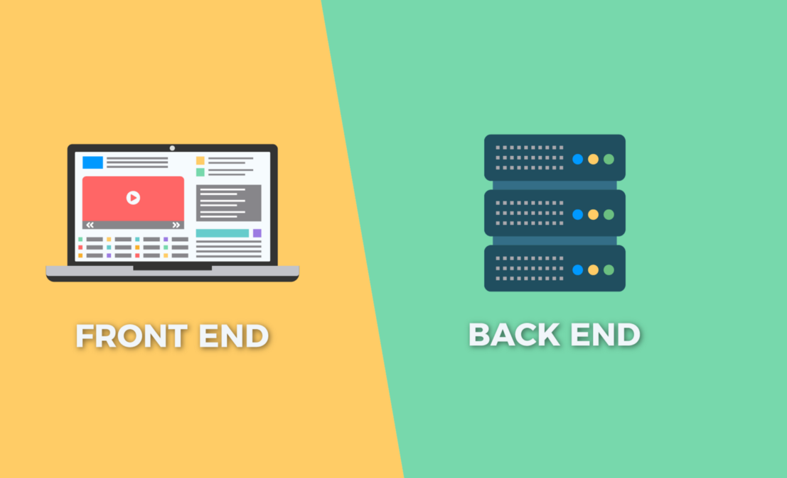
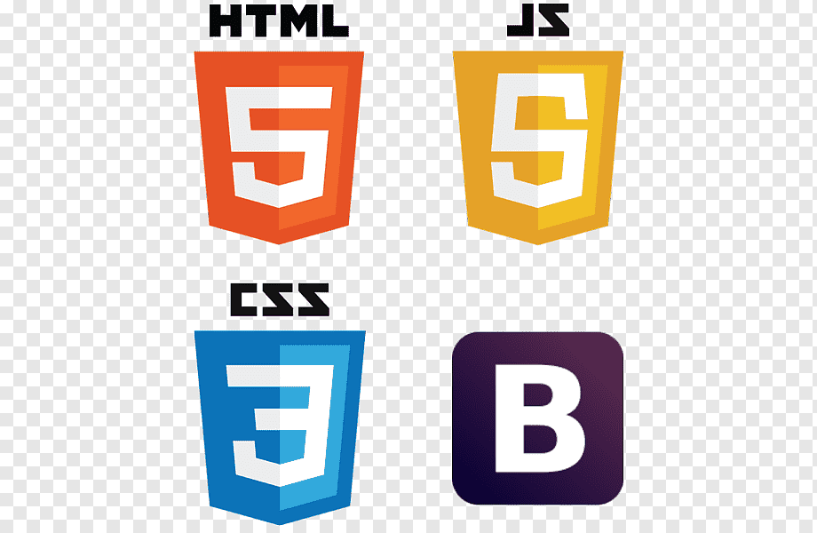
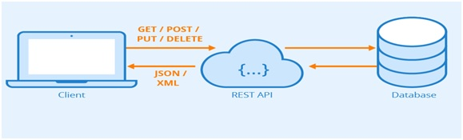

RUTA DEL DESARROLLADOR WEB
Es la programación con el usuario haciendo preguntas a Backeud.
Se desarrolla a traves de tres lenguajes:
-Arquitectura que es html
-Maquillaje que es css
-Interacción que es JavaScript.
-Es la lógica de una plataforma web.
-Se encarga de implementar todo lo relacionado con la parte visible.
-Es lo que ve el usuario cuando navega por la web.

Es el puente donde permite comunicar a Frontend y Backeud.
Api se divide en dos:
-Rest, quien controla los datos de backeud.
-Graphol, controla frontend
